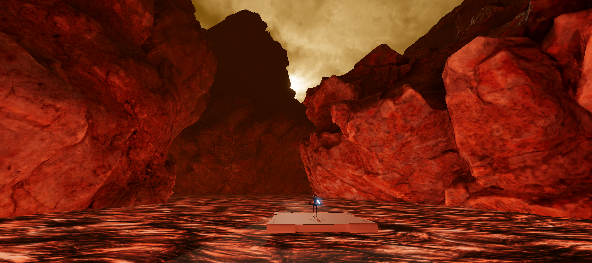

VR+mocap prototype
Combining VR and full-body motion capture for highly physical virtual experiences.
This is a work-in-progress demo of a colocated VR multiplayer dueling game. Two players face off with physical foam swords inside of a motion capture setup. The capture data is streamed to the headsets to create visuals that match up spatially to what is happening in real life.
While I would love to show this game in action, the motion capture system I am currently borrowing is currently configured for another project. This demo video shows previously recorded data streamed from Motive into Unity.
I used several CC0 assets from PolyHaven.com and AmbientCG.com to create a generic lava planet. A scrolling noise offset to the lava river's UVs gives the backdrop some life.